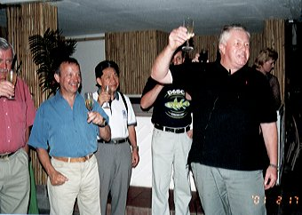
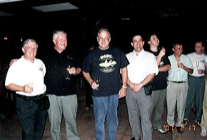
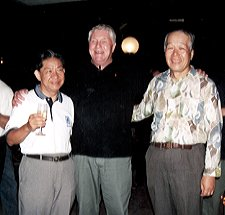
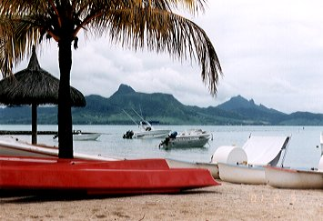

The Five Star DXers Association


FSDXA DXpedition
08.Feb-28.Feb.2001
D68C COMOROS 2001

FSDXA DXpedition
08.Feb-28.Feb.2001
|
◎ D68C(Comoros)DXpedition 英国のDXグループ・CDXC(Chiltern DX Club)のメンバーによって構成されている"FSDXA" (The Five Ster DXers Association)が主催するD68・コモロへのDXpeditionが、 2001年2月8日から2月28日まで行われた。コールサインはD68C。 このD68Cの運用は1998年にCDXCが行った9M0C(Spratly Is)と同様"多国籍メンバー"で構成され、 今回は11ヶ国の総勢26人により20日間の長期運用だった。 DXpeditionには日本からもJA1RJU (2/5-3/1)、JA3AER (2/11-2/17)の両局が参加。 D68Cは160mから6m(当初予定していたサテライトは中止)までのオールバンド、オールモードで"連続運用"され、最終的な総QSO数は168,722 QSO(異なる局の数45,315局)を記録、 運用開始24時間のQSO記録、バンド別、モード別QSO数など、歴代のDXpeditionの交信記録を大幅に更新した。 |

交信数100,000 QSO突破の記念パーティーで乾杯するD68Cのリーダー・G3NUG(右端)


◎ D68C DXpedition Statistics
Category Previous record Held by D68C expedition
Mixed 96,004 ZL9CI 168,722
SSB 41,343 ZL9CI 75,497
CW 52,270 ZL9CI 84,482
FM N/A --- 3,458
RTTY 2,827 FO0AAA 4,167
PSK N/A --- 1,112
Unique calls 36,109 4J1FS 45,315
First 24 hrs 14,000 FO0AAA 16,412
First week N/A --- 92,728
(We have used OH2BU's Mega-DXpedition Honor Roll as our source of
previous records) Overall Rate: 238 QSOs/hr.
|
|
運用に先立ち、HF・VHF帯の機材(Yaesu Mark V・FT-1000MP+VL-1000×6、FT-920×2、FT-847×1、FT-900×2、SB-200、FL-2100B etc)、11台のラップトップPC、
各周波数帯のアンテナ、マスト、同軸ケーブル4,000m、コントロール・ケーブル1,600m、
ラジアル・ワイアー6,000mなど総重量3トン以上の機材が英国から大型コンテナでコモロに輸送された。 全日程をフル参加するメンバーと前半参加のメンバーは2月5日に現地入りして運用準備を行い、 このメンバーに途中参加の"短期組"が合流、全期間のフル運用をこなした。 当初2月8日からの運用開始を予定していたが、到着直後の悪天候(豪雨)と予想以上の足場の悪さでアンテナの設営に手間取り、 運用開始は2月8日21:00z(2/9 00:00LMT)となった。 |
  2枚折り、4面フルカラーのFBなD68CのQSL。 ◎ D68C・DXpedition member and Length of stay(*印 全期間運用者) 5B4AGC/G3LNS George Beasley (2/13-2/27) ZC4AKR 5B4WN/G0WWW Marios Nicolu (2/20-2/28) C4W 9H1EL Jeff Morris *(2/5-2/28) 9M0C DL7AKC Jens Sperling (2/13-2/28) G0OPB Tony Cannin *(2/5-2/28) 9M0C G3NUG Neville Cheadle *(2/5-2/28) 9M0C(Team leader) G3BJ(exG3OZF)Don Beattie *(2/5-2/28) 9M0C G3SED Mike Devereux (2/5-2/21) 9M0C/JY7SIX G3VMW Steve Wilson (2/5-2/21) 5V7SW/ET3AA/XZ0A.etc G3WGV John Linford *(2/5-2/28) 9M0C G3XTT/NK1G Don Field (2/5-2/21) 9M0C G4JVG Steve Telenius (2/5-2/21) 9M0C/EP2SL/AX9YG/P29DX.etc G4KIU Nigel Paecock (2/5-2/21) G4TSH Justin Snow *(2/5-2/28) G4VXE Tim Kirby *(2/5-2/28) C6A.etc GU4YOX Bob Beebe (2/5-2/21) JA1RJU/KH2K Kazu Ogasawara *(2/5-2/28) 9M0C/9M0F/BS7H/T88JU/9M6JU.etc JA3AER/GW0RTA Taizo Arakawa (2/11-2/17) N2ATT/HS1TA/9H3TA/9V1PJ.etc M0BJL Shaum Jarvis (2/5-2/21) 9J2JS/J3/V2/M0BJL.etc M0DXR Mark Haynes *(2/5-2/28) N7CQQ John Kennon *(2/5-2/28) FO0AAA/FO0CA PE9PE Rob van den Ent (2/5-2/21) SM5AQD Hawk Eriksson (2/5-2/14) VU2LAM/4K3MI/EZ0Z.etc UT8LL Victor Rusinov *(2/5-2/28) OF0MA W3EF/G0UHK Maury Peiperl (2/5-2/14) K1VR/GW8GT.etc W3WL Wes Lamboley *(2/5-2/28) VK0IR/A52A/XR0Y.etc  D68C Homepage |
 |
D68C(2) Projects |
 |
D68C(3) Operating |
 |
D68C(4) Comoros |
 |
D68C(5) Album |
 |
D68C(6) DATA |